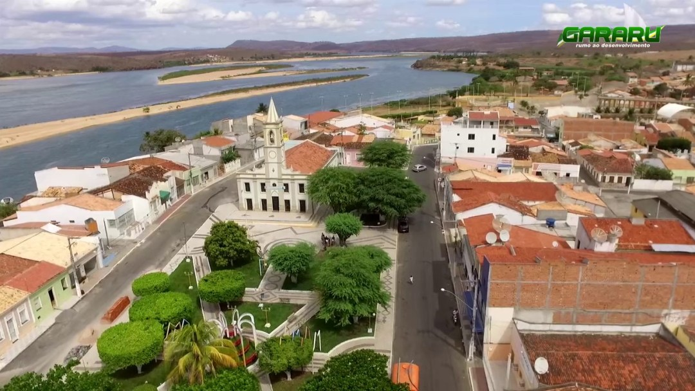

Gararu
História
A cidade de Gararu, a 161 quilômetros da capital, primitivamente chamou-se Curral de Pedras, em decorrência da grande quantidade de currais construídos com paredes feitas literalmente com pedras. Como aquele terreno era bastante pedregoso, os primeiros criadores aproveitaram as pedras para fazer cercados à beira do Rio São Francisco, onde prenderam seus rebanhos de bovinos, caprinos e ovinos.
No início do século XVII, as terras onde está implantado o município pertenciam a Tomé da Rocha Malheiros, obtidas através de sesmaria de dez léguas, a partir da Serra da Tabanga em direção ao sertão. Outra versão diz que a primeira penetração se deu com os colonos portugueses que foram refugiar-se na Serra da Tabanga, fugidos do ataque dos holandeses, iniciado o povoamento em março de 1637.
A construção da Capela de Bom Jesus dos Aflitos se deu inicio na década de 40 do Século XIX. Essa simples capela foi transformada, pela resolução nº 473, de 28 de março de 1857, em sede da freguesia de Nossa Senhora da Conceição do Porto da Folha, onde se manteve pelo o período de 07 anos. Mas em 10 de abril de 1875, através da Resolução Nº. 1.003, a povoação de Curral de Pedras passava a ser sede da freguesia de Nosso Senhor Bom Jesus dos Aflitos, desmembrada da de Nossa Senhora da Conceição da Ilha do Ouro
fonte: https://gararu.se.gov.br/Dados Gerais de acordo com o IBGE
| Prefeito (a) | Gilzete Dioniza de Matos | Site do município | https://gararu.se.gov.br/ |
| Área territorial | 656,956 km² |
| População estimada | 11.599 pessoas |
| Densidade demográfica | 17,41 hab/km² |
| IDHM | 0,564 |
| PIB per capita | R$ 10.196,44 |